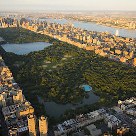

Central Park South
#byob #outdoorseating #bread #pasta #casualpub #laidback #beer #brunch #centralparkview #livejazz
Neighborhood Lowdown
Central Park South is a place that I enjoy very much even though it's a place people generally want to live when they're older, need more space and life comforts while still conveniently located to the rest of what Manahattan has to offer. While the areas near the park are touristy, the atmosphere is still relaxing, and 5th Avenue close to the park draws tourists and locals alike.
Public Transit Service: Pretty much all lines
Cup of Joe

Le Pain Quotidien - 57th and 7th
Nothing too special, but if you're in a pinch for coffee, this is a nice, casual place close to the park where you can grab one!
Let's get started
Eat
Maison Kayser
#byob #outdoorseating #bread #pasta
One of my favorite places in the summertime, La Maison Kaiser is a French bakery that sets up chairs and tables outside in the summer time right by Columbus Circle. You get a great combination of the park and the people to look at while you eat. They are famous for their breads, but a casual dinner here is just as nice and you can BYOB (Bring Your Own Beer/Wine/Alcohol). In case you forget to buy beforehand, there is a wine store just around the corner.
Sarabeth's
#brunch
Sarabeths is super famous for reasons that aren’t really clear to me. The food is great, but nothing extraordinary for the price. For brunch, it is a little on the pricey side. However, it is well-known as a New York brunch spot with multiple locations –and this I think is the nicest one I’ve been to. There is also one in Upper Manhattan that I have yet to try.
Halal Guys
#brunch
I can’t guarantee that this is the healthiest food or that you will feel like you’ve made a good decision after eating this, but if you’re ever around 53rd street and 6th Ave, you will smell this, your brain will shut off, and you’ll find yourself standing in line of both locals and tourists for a famous bowl of chicken, rice, lettuce and pita bread, drenched in yogurt sauce. Particularly good at 3am or at other ungodly hours, Halal Guy’s chicken and rice makes for a DELICIOUS, quick cheap meal at any time of the day. To avoid the long lines, don’t go on weekends around lunch and dinner.
Robert at the Museum of Art and Design
#brunch #centralparkview #livejazz
IThis is hands down, my absolute favorite brunch place, even though it’s usually filled with older people and families. Others our age might not say the same, but I’ve found that I enjoy a more sedate brunch environment where you can have a good view, good conversation, and most crucially NO LINES. Make yourself a reservation a month in advance for some of the window views (maybe you can do this for your family when they come in May!) and enjoy a gorgeous view of Central Park and live jazz while you brunch. I’ve had almost every brunch item on the menu, and can’t recommend it enough to start off a relaxing Sunday morning!
Drink
McGee's
#casualpub #laidback #beer
Not sure if you are a How I Met Your Mother fan, but this is the bar that they take tourists to on the weekends, as it is the bar the show was originally based on. I don’t watch the show, but I happened to meet the creators of the show here, with whom we had quite interesting conversations! Tourism aside, I actually used to live right next to this bar, and it is also a nice chill spot to grab a decent drink. (okay, yes, I did semi-write this post because I wanted to share this fun story about myself :) )
Play
Central Park
#nature #exercise #alone #group
You should definitely do this! When I did it, I used the Citi bikes, which limit you to a half hour unless you pay more. While the men standing on the sides of the streets renting bikes seem sketchy, I actually think that the service might make more sense if you are planning to spend some more time in the park.
Recommended Trip
Take a stroll through Central Park while it's still early - there will still be tons of people, but it will be a little more serene.

Visit the Museum of Natural History - one of the largest in the US. Tickets are donation based.
Enjoy some unhealthy Halal Guys after your long day walking! You deserved it.
- liang.val63@gmail.com |
- 02.22.2015 |
- valpal23.blogspot.com |
- Home
This website is not intended for public viewing and all photos used are only temporary placeholders.